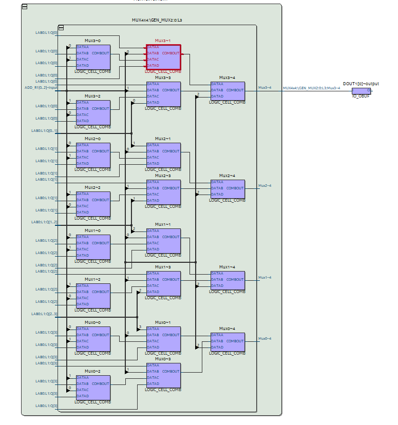
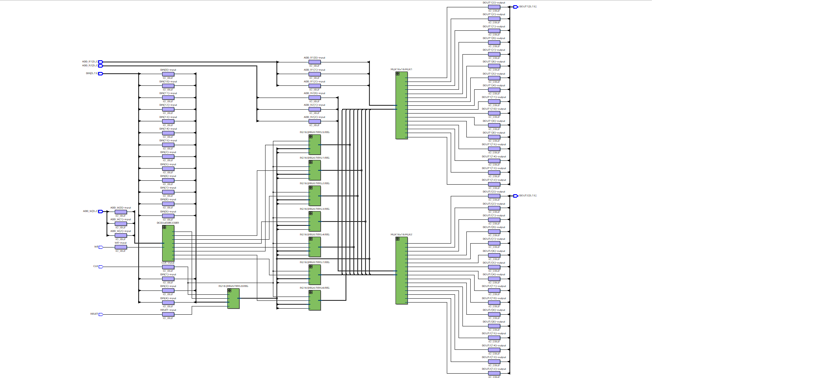

Register File
A register file is a small, fast memory unit within a CPU that stores temporary data needed during instruction execution. Unlike RAM, which holds large amounts of data, the register file offers quick access to values needed for arithmetic, logic, and data movement operations. It is essential for CPU performance, allowing fast data retrieval without accessing slower main memory.
Each individual register inside the register file is a fixed-width storage element, often 8, 16, or 32 bits wide, depending on the architecture. A typical register is built using a chain of D flip-flops, one for each bit. These flip-flops are synchronized by a clock signal and controlled by enable and reset lines. When enabled, the flip-flops capture and hold data until the next update cycle, functioning as the basic building blocks of processor state.
This module stores and routes data between CPU components. It contains 16 registers with dual read and single write capabilities. Below are the different components used to construct the register file.
1. Basic 4-to-1 MUX Logic Cell

This is the logic cell that forms the core of the multiplexer system. Each one takes in 4 data lines and routes one to the output based on the control signals.
2. MUX 16x4 Grid
Here we scale the individual MUX logic into a 16x4 grid to enable selection between 16 registers. Each row corresponds to a bit across the register set.
3. Resource Properties

This schematic gives insight into how the FPGA compiler maps the logic to hardware resources. It reveals usage of LUTs, flip-flops, and routing complexity.
4. Register Cell Structure

This image shows how each register stores 8 bits using flip-flops and how they are controlled by clock, reset, and enable signals. This structure is replicated 16 times.
5. Full Register File Integration
This is the complete top-level schematic of the register file. It includes the decoder, write logic, 16 registers, and two read ports using MUXes for dual access.
6. Register File Simulation

This waveform confirms correct operation. It shows the clock, control signals, register addresses, and outputs. Note how data is written and read across simulation time.
Project for UAF EE 443 LAB with "Dr. Raskovic".
ALU Design
An Arithmetic Logic Unit (ALU) is a core component of the CPU responsible for executing arithmetic and logical operations. It handles tasks like addition, subtraction, and bitwise logic. The ALU takes input from the register file and outputs results that can be reused or stored. It plays a crucial role in enabling all computational work done by the processor.
This ALU design project is currently in development. Further updates including schematics, logic flow, and simulation results will be added soon.
Project for UAF EE 443 LAB with "Dr. Raskovic".